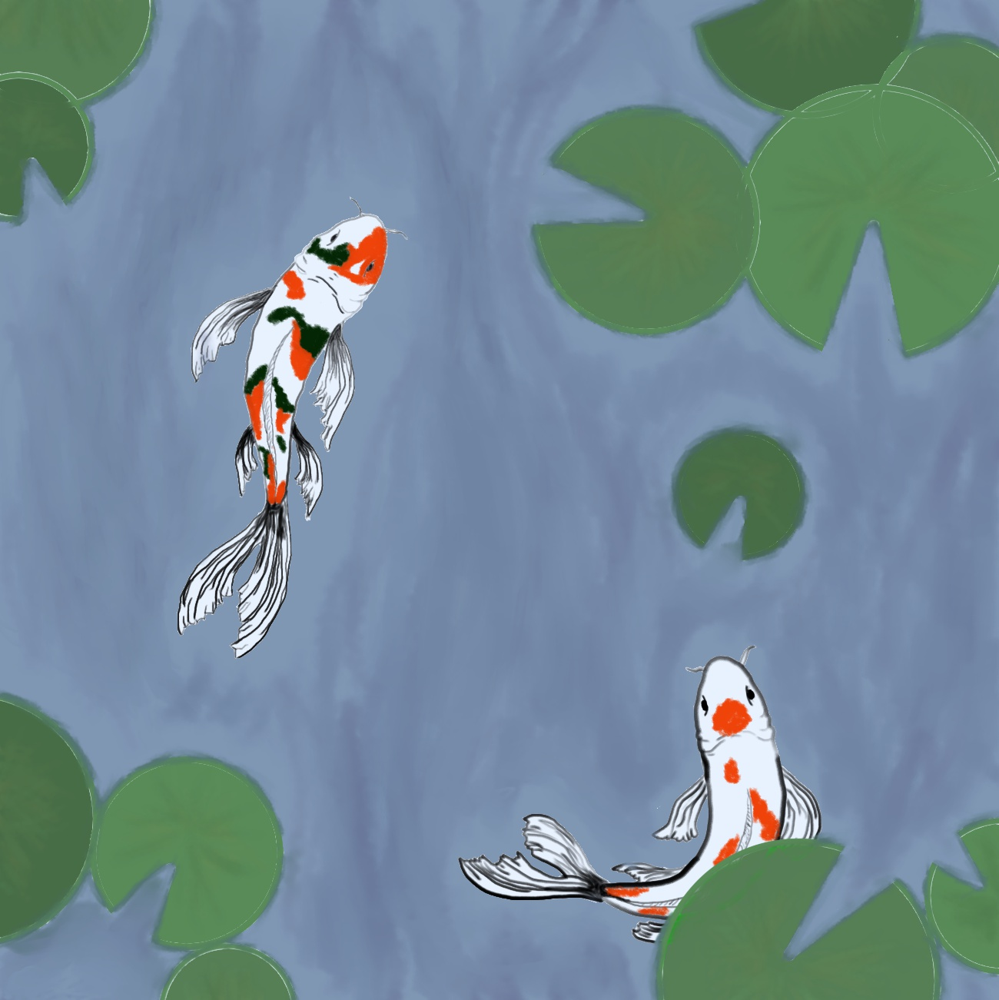
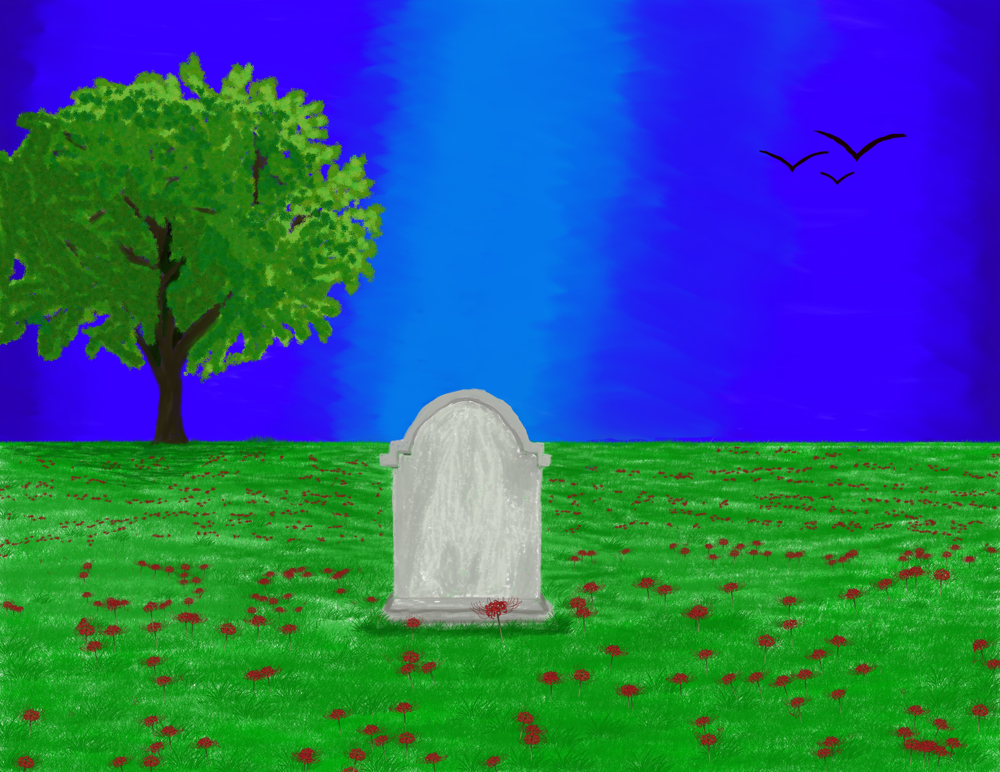

For this creation I was asked to find inspiration from a different digital artist.
It was difficult to pick one.
The artist I chose to get my inspiration from is Fabiola Morcillo. I love the dark
background and bright colors he uses. His work uses real objects and make sense
so I wanted to take a little different route that is more fun and abstract.
To create something that doesn't make as much sense but something that still uses
the fun colors. I put the plant upside down on purpose as well to get away from
the very realness of Fabiola's work. I am very content with how my piece turned out.
If I did change something I would cut off some the plant on the side to add more depth.

For project 3 we had to find inspiration from a artist whose work in
not created digitally.The artist I chose was Mercedes Gordo's. The reason why I chose her
and her artwork is because she has a wide variety. Most of her pieces are in black
and white, or they showcase a color. She has a lot of beautiful, difficult works and
she also has a lot of works that are like splashes of color. A lot of her pieces
are centered around nature, which is why I went for the fish and lilies. She
actually does have koi fish and lily artworks but they are different than the usual
color scheme used. So I wanted to change it up a bit. A lot of the fish were more
childlike artwork that lacked a lot of detail in her other pieces,
so I wanted to change up the style and really make the fish pop. I also wanted to make sure that there were still different shades
of lily pads and different colors in the water in order to give it more depth like
she does.
I wanted to make the fish be center focus so I hued everything to base to base more of a murkey color. The fish really do pop out. I also like the shapes of the fish. It really helps with the flow of this piece.

My inspiration for this piece comes from a poem. The poem is titled,
"Do Not Stand At My Grave And Weep" by Mary Elizabeth Frye. There is a lot going on
that I can easily see within this poem. It was difficult to pick and choose because
there were so many different times/seasons within the poem. Therefore, I went for a
more overall feel/look. The first thing that I want people to notice is that there
is nobody standing near the grave weeping. Instead, there is life and happiness all
around the gravestone. It is day time with the sun glistening, birds circling, and a
guess of wind being present so there are some aspects of the poem within the piece.
I wanted to move past the death part, and focus on more of the life and time still
going on (like what the poem does). I don't quite know if a captured the point of
someone still existing past death though.